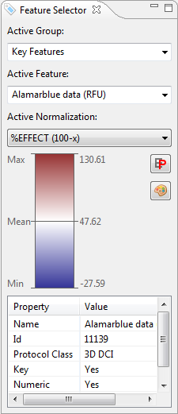
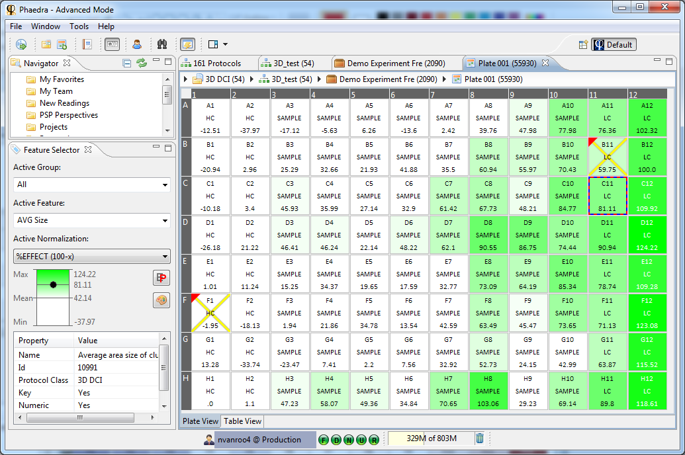
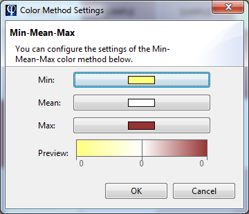

Just like the Navigator, the Feature Selector is an important tool for navigation within Phaedra. It displays the active Feature, along with its active Normalization and active Group. The feature that you select here, is the current feature, and will be applied in many other views, including heatmaps and dose-response curves.

Whenever you are looking at well data (e.g. in a plate heatmap), you can choose which well feature to display using the Feature Selector. Switching to another Feature or Normalization will immediately update the view.
Here is an example of a heatmap showing the feature 'Alamarblue data (RFU)':

When you select another feature as the active feature, the Heatmap will instantly update, using that feature's color method:

You can change colors used in the heatmap by clicking the color method icon:

The color method can be plate-based or experiment-based. The latter means that all control wells from the whole experiment are used to calculate the color method's boundary values.
Features and Protocols
The Features listed in the Feature Selector are the Features that are defined in the currently active Protocol Class. Selecting an object that belongs to another Protocol Class, will change the set of Features listed in the Feature Selector.